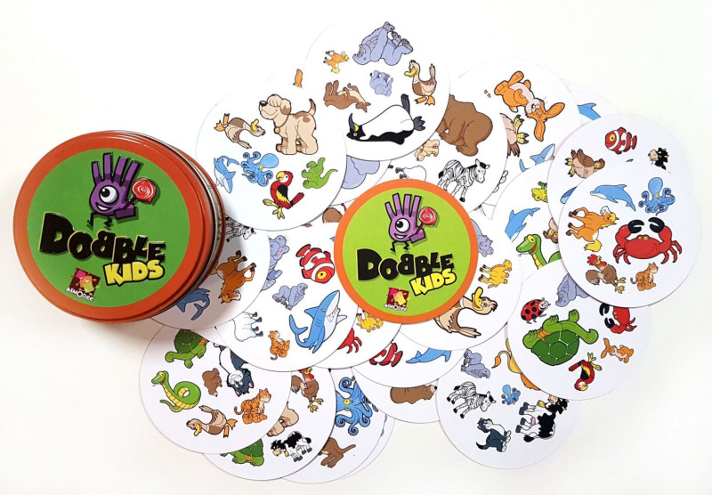

A Dobble Kids társasjáték 30 kártyából áll, ahol minden kártyán 6 különböző állat szerepel (összesen 31 fajtából), amelyekre az az érdekes tulajdonság teljesül, hogy bármely két lapon pontosan egy azonos állat van.

Egy ilyen kártyapakli generálása nem könnyű feladat, és nagyon szép matematika van a hátterében. Meg lehet mutatni, hogy ha egy lapon k állat van, akkor összesen k(k-1)+1 különböző kártya készíthető. Viszont k = 6 esetén ez 31, nem 30, tehát van egy olyan lap, amit még hozzá lehetne venni a paklihoz, hogy a tulajdonság továbbra is fennálljon. Keressük meg ezt a lapot!
Először is készítsük el a pakliban levő kártyák listáját! Minden kártya állatok listája, tehát a pakli listák listája lesz:
lapok([[bagoly, bálna, hal, kacsa, rák, tehén],
[bagoly, bárány, elefánt, polip, teknős, teve],
[bagoly, béka, delfin, gorilla, kígyó, kutya],
[bagoly, cápa, cica, kakas, nyuszi, pingvin],
[bagoly, katicabogár, kenguru, krokodil, tigris, zebra],
[bagoly, ló, medve, oroszlán, papagáj, víziló],
[bálna, bárány, cica, delfin, kenguru, papagáj],
[bálna, béka, cápa, ló, teknős, zebra],
[bálna, elefánt, kutya, nyuszi, oroszlán, tigris],
[bálna, gorilla, kakas, krokodil, medve, teve],
[bálna, katicabogár, kígyó, pingvin, polip, víziló],
[bárány, béka, kacsa, kakas, katicabogár, oroszlán],
[bárány, cápa, gorilla, hal, tigris, víziló],
[bárány, kígyó, krokodil, ló, nyuszi, tehén],
[bárány, kutya, medve, pingvin, rák, zebra],
[béka, cica, elefánt, krokodil, rák, víziló],
[béka, hal, kenguru, medve, nyuszi, polip],
[béka, papagáj, pingvin, tehén, teve, tigris],
[cápa, delfin, elefánt, katicabogár, medve, tehén],
[cápa, kacsa, krokodil, kutya, papagáj, polip],
[cápa, kenguru, kígyó, oroszlán, rák, teve],
[cica, gorilla, oroszlán, polip, tehén, zebra],
[cica, kacsa, kígyó, medve, teknős, tigris],
[delfin, hal, krokodil, oroszlán, pingvin, teknős],
[delfin, kacsa, nyuszi, teve, víziló, zebra],
[delfin, kakas, ló, polip, rák, tigris],
[elefánt, gorilla, kacsa, kenguru, ló, pingvin],
[elefánt, hal, kakas, kígyó, papagáj, zebra],
[gorilla, katicabogár, nyuszi, papagáj, rák, teknős],
[kakas, kenguru, kutya, tehén, teknős, víziló]]).Szintén hasznos lehet az összes állat listája:
állatok([bagoly, bálna, bárány, béka, cápa, cica, delfin,
elefánt, gorilla, hal, kacsa, kakas, katicabogár,
kenguru, kígyó, krokodil, kutya, ló, medve, nyuszi,
oroszlán, papagáj, pingvin, polip, rák, tehén,
teknős, teve, tigris, víziló, zebra]).Ha most ezekből az állatokból egy kártyát szeretnék képezni, akkor annak két dolgot kell teljesítenie: (i) 6 elemből kell állnia, és (ii) az állat-lista részhalmazának kell lennie. Az alábbi szabály az A listából választ ki 6 különböző elemet:
választ6(A, L) :-
L = [_, _, _, _, _, _],
részhalmaz(A, L).A részhalmaz szabály feladatként fel volt adva; az alábbi verzió feltételezi, hogy az elemek azonos sorrendben fordulnak elő (tehát nincs olyan elempár, ami a két listában fordított sorrendben szerepelne). Ez a megkötés, mivel most úgy használjuk, hogy a részhalmaz elemei változók, azt vonja maga után, hogy a keletkező részhalmazban az elemek olyan sorrendben lesznek, mint ahogy a teljesben szerepeltek.
részhalmaz([], []).
részhalmaz([X|M], [X|R]) :- részhalmaz(M, R).
részhalmaz([_|M], R) :- részhalmaz(M, R).Az üres halmaznak csak az üres halmaz a részhalmaza. Egyébként úgy kapunk meg egy részhalmazt, hogy az első elemet (X) vagy hozzáadjuk (2. sor), vagy nem adjuk hozzá (3. sor) a maradék (M) egy részhalmazához (R).
A következő feladatunk, hogy ha készítettünk egy lapot, akkor eldöntsük, hogy jó-e. Ezt úgy tudjuk megtenni, hogy összehasonlítjuk a többi lappal egyenként, és megnézzük, hogy az állat-halmazok metszete 1-elemű-e:
jó_lap([], _).
jó_lap([L|M], X) :- metszet(X, L, [_]), jó_lap(M, X).Itt az első argumentum a többi kártya listája; ha ez üres, az azt jelenti, hogy minden kártyát leteszteltünk, készen vagyunk. Egyébként megnézzük, hogy az aktuális kártyára a metszet 1-elemű-e (hogy mi ez az elem, az nem érdekes), és még ellenőrizni kell a maradékra is.
A metszet számítása van még hátra:
metszet([], _, []).
metszet([X|L1], L2, [X|L3]) :- tartalmaz(X, L2), metszet(L1, L2, L3).
metszet([X|L1], L2, L3) :- nemtartalmaz(X, L2), metszet(L1, L2, L3).Az üres halmaz metszete bármivel üres. Ha az első elem (X) szerepel a másik halmazban (L2), akkor benne lesz a metszetben is; különben nem.
Azt, hogy egy elem nincs benne egy listában, a nemtartalmaz fejezi ki:
nemtartalmaz(_, []).
nemtartalmaz(X, [Y|M]) :- X \= Y, nemtartalmaz(X, M).Ezzel minden megvan már, csak össze kell rakni a darabokat:
megoldás(X) :-
állatok(A), lapok(L),
választ6(A, X), jó_lap(L, X).Röviden: kiválasztunk 6 állatot úgy, hogy az így készült kártya jó legyen a pakli minden lapjához.
Ha kipróbáljuk, kicsit hosszabb gondolkodás után megkapjuk a megoldást:
?- megoldás(X).
X = [cica, hal, katicabogár, kutya, ló, teve]Ezen a programon is sokat tudunk majd javítani. Magasabb rendű szabályokkal kényelmesen le lehet generálni az állatok listát, és nem kell kézzel megadni; valamint a nemtartalmaz-ra nem lesz szükség, ha megtanuljuk a vágásokat (vagy ha a beépített intersection-t használjuk a metszet szabály helyett).